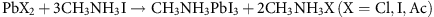

Abstract
To date, there have been a plethora of reports on different means to fabricate organic–inorganic metal halide perovskite thin films; however, the inorganic starting materials have been limited to halide-based anions. Here we study the role of the anions in the perovskite solution and their influence upon perovskite crystal growth, film formation and device performance. We find that by using a non-halide lead source (lead acetate) instead of lead chloride or iodide, the perovskite crystal growth is much faster, which allows us to obtain ultrasmooth and almost pinhole-free perovskite films by a simple one-step solution coating with only a few minutes annealing. This synthesis leads to improved device performance in planar heterojunction architectures and answers a critical question as to the role of the anion and excess organic component during crystallization. Our work paves the way to tune the crystal growth kinetics by simple chemistry.
Access provided by University of Washington
Introduction
Perovskite solar cells have rapidly become an emerging photovoltaic technology, which has evoked widespread scientific and industrial interest1,2,3,4,5,6,7,8,9. The light-absorbing material is an organic–inorganic trihalide perovskite with an ABX3 structure (where A is an organic cation, B a divalent metal ion and X a halide Cl, Br or I or any mixture thereof). Typically, this is methylammonium lead triiodide CH3NH3PbI3 or mixed halide variants CH3NH3PbI3−xClx and CH3NH3Pbl3−xBrx, which can be synthesized simply from cheap materials, in contrast to traditional semiconductors. Thin films can also be fabricated by various deposition procedures including simple one-step solution coating1,2,3, sequential dip coating4, vapour phase deposition5 or combinations thereof10, similarly versatile to organic semiconductors. In contrast to the latter though, perovskites exhibit excellent crystallinity, ambipolar transport3 and large diffusion length for both electrons and holes11,12. Since the seminal work by Miyasaka and co-workers13 in 2009, who showed a 3.8% efficient perovskite-sensitized solar cell employing a liquid electrolyte, various device structures ranging from sensitized solar cells on mesoscopic semiconducting TiO2 (refs 2, 3, 4) or insulating Al2O3 scaffolds1,14, to the planar heterojunction (PHJ) architecture5,7,11, have been explored. To date, through optimizing device design, material interfaces and processing techniques, a certified efficiency of 17.9% has been reported15, in a device which is a combination of a mesoporous infiltrated anode with a solid perovskite thin film. These recent developments demonstrate the enormous potential of perovskite solar cells, with trajectory suggesting that they should soon compete with traditional silicon solar cells.
Although the performance of perovskite solar cells has improved rapidly in the last 2 years, the basic properties of organic–inorganic trihalide perovskites are not well understood. A lot of recent work exploring the absorber material has focused on tuning the band gap by changing the ratio of the anions16, cations17 or the divalent metal18,19. However, the impact of the solution composition on perovskite crystal growth and film formation, and thus on the device performance, is still under scrutiny20,21. For example, it is challenging to form a smooth and continuous perovskite film on compact TiO2 (c-TiO2)-coated fluorine-doped tin oxide (FTO) substrates by one-step solution coating of a solution containing lead iodide (PbI2) or lead chloride (PbCl2) blended with methylammonium iodide (CH3NH3I)22,23. A noncontinuous perovskite film is usually obtained, where pinholes can introduce shunting pathways limiting the solar cell performance. In addition, although the different electrical and photophysical properties have been observed for the ‘mixed halide’ perovskite CH3NH3PbI3−xClx as compared with CH3NH3PbI3 (refs 11, 12), the existence and role of Cl in mixed halide perovskite are still debatable and the varied results from groups employing different characterization techniques are hard to reconcile1,20,23,24,25,26. We have previously found that by employing a large excess of organic component (CH3NH3I) much larger crystalline domains can be formed1, and smoother films can be created than those processed from a stoichiometric mix of CH3NH3I and PbI2 (ref. 11). However, the role and the fate of the excess organic component during film formation and crystallization remain mysterious. A complete understanding of these issues is hence critically important for advancing our understanding of perovskite semiconductors and solar cell performance.
In this work, we employ several lead salts, PbCl2, PbI2 and lead acetate (PbAc2) in conjunction with a 3-molar excess of CH3NH3I. All material-processing routes lead to the formation of CH3NH3PbI3 with undetectable amounts of the ‘spectator’ anion (Cl or Ac) but with considerably different thin-film properties. In the latter case, PbAc2, the only halide source in the final perovskite film, is from CH3NH3I, which helps to identify more clearly what role the spectator ion (Cl or Ac) plays during perovskite film formation. Our findings reveal that the anion has a substantial effect on the perovskite crystal growth kinetics and film morphology. By simple one-step solution coating using PbAc2 as the lead source, we obtain a compact perovskite film with full coverage on the substrate. Surprisingly, the smoothness of the films surpasses that of vapour-deposited films. In addition, the processing time is greatly reduced to a few minutes for the PbAc2 route because of the more rapid loss of excess organic material and ensuing faster crystal growth. By optimizing device fabrication conditions, we achieve a power conversion efficiency (PCE) of 15.2% in a PHJ architecture through the PbAc2 route, measured under one sun illumination, which is a significant improvement upon similar solar cells fabricated from either PbCl2 or PbI2 routes.
Results
Crystallographic structure and evolution of perovskite
We prepared different perovskite solutions by mixing 3:1 (by moles) of CH3NH3I:PbX2 in N,N-Dimethylformamide, where X is Cl, I or Ac. It is noted that we do not use a ratio of 1:1 of CH3NH3I:PbI2 as the focus of this study is to elucidate the role of anions when processed with excess organic component, as we employ in our conventional ‘mixed halide’ perovskite CH3NH3PbI3−xClx. We fabricated films on FTO/c-TiO2 substrates by one-step solution coating of different perovskite solutions in a nitrogen-filled glovebox. The perovksite films made from solutions using PbCl2 or PbAc2 as the lead source were annealed at 100 °C in the glovebox after spin-coating. Since the perovskite does not form at 100 °C from the solution using PbI2 as the lead source, even after 12 h annealing, the temperature was increased to 150 °C for this PbI2 route. The annealing times were optimized separately for each route to achieve best solar cell performance (see Methods). In Fig. 1, we show the X-ray diffraction patterns of perovskite films fabricated using different lead sources. From the X-ray diffraction reflections it is evident that the materials fabricated from perovskite solutions with different lead sources are invariably the same in their crystal structure. X-ray diffraction reflection confirms the CH3NH3PbI3 perovskite structure with lattice parameter with a=b=8.85 Å and c=12.64 Å (ref. 13).
The perovskite films were deposited on a FTO/c-TiO2 substrate from the reagent solution containing different lead sources (lead chloride, lead iodide and lead acetate). Peaks are assigned to the reflections from a tetragonal perovskite lattice with unit cell parameters a=b=8.85 Å, c=12.64 Å. Peaks marked with * and # are assigned to the FTO and traces of PbI2, respectively.
From an analysis using the Scherrer equation, the crystal sizes of perovkites made from PbCl2, PbI2 and PbAc2 routes are estimated to be >500 nm (larger than machine resolution), 305±65 and 135±45 nm, respectively. It is important to note that these values are based on the assumption of spherical perovskite crystals. In contrast, for our samples, because of the film thickness limitation, crystals are much more parallel than perpendicular to the substrate, meaning that the crystal size is underestimated by the Scherrer equation analysis. Considering that all samples have similar film thickness, it is safe to assume that the observed size trend is still valid. In addition, scanning electron microscope (SEM) images shown below are consistent with the PbAc2 route, delivering smaller crystals.
To understand the evolution of the perovskite crystal formation using different lead sources, we performed in situ wide-angle X-ray scattering (WAXS). Figure 2a–c shows a series of one-dimensional (1D) plots obtained from two-dimensional (2D) data sets, which have been integrated over all azimuthal angles. Similar to previous reports, we note a ‘precursor’ material formed before the perovskite crystallization27; although each system exhibits a different diffraction pattern for the ‘precursor’ structure, they are all distinguishable from the perovskite pattern. The kinetics of the systems are assessed by tracking the key ‘precursor’ peaks (marked in Fig. 2a–c on the bottom-most traces) and defining tend as the time when all ‘precursor’ peaks are gone. The PbAc2- and PbCl2-based films are annealed at the same temperature and can be compared straight away with tend=2.5 min and tend=43.8 min, respectively. The PbI2-based film was annealed at 150 °C and has a tend=17.8 min. In a previous experiment we annealed PbCl2 films at 130 °C and found tend~8–10 min (Supplementary Fig. 1). From these data we can extrapolate that perovskite crystal formation is faster from PbCl2 route than from PbI2 route, and fastest from PbAc2 route leading to the following order: PbAc2>>PbCl2>PbI2.

Azimuthally integrated 1D plots at several key time points (t, in minutes) of annealing for films made from (a) PbCl2, (b) PbI2 and (c) PbAc2 routes. Red dashed traces indicate the point of complete perovskite transformation, blue stick markers on the bottom-most traces note the peaks used to track the ‘precursor’ structure; the three grey peaks in c are from the TiO2 substrate and have been greyed out for clarity. (d–f) 2D WAXS images corresponding to tend of the respective samples in a–c. Two rings marked with a red ‘x’ are from the TiO2 substrate, horizontal line is the detector seam; red dashed line is the (110) peak for the tetragonal perovskite. (g–i) Azimuthal line scans for (110) peak at 10 nm−1 (q vector) radially integrated between 9.9–10.1 nm−1 and normalized such that the entire integrated area=1,000. (j–l) Peak intensity of the (110) peak normalized by the intensity at tend (defined in text). Plots begin ~1 time point before tend and extend to the end of the experiment.
In addition to providing a relative comparison of the kinetics of the three systems, the WAXS data also reveal information about the crystal texture and coarsening. Figure 2d–f shows 2D perovskite patterns obtained at tend. The dashed red lines note the location of the (110) peaks that are radially integrated resulting in line scans as shown in panels Fig. 2g–i. The less spotty 2D pattern and a weak dependence of peak intensity on azimuthal angle for the PbAc2-based film suggest a material with smaller grains and weaker crystallographic orientation, as expected from the faster rate of crystallization. Overall, the PbCl2-based film shows a similar orientational behaviour as the PbI2-based one, but with larger crystal sizes. We attribute this difference to longer overall annealing times at lower temperatures allowing for better crystal growth before the beginning of decomposition. It should be noted that these are crystal morphology effects that need to be distinguished from film morphology effects discussed further below.
Figure 2j–l shows the (110) peak intensity for each film beginning just before the time when all ‘precursor’ peaks are gone, tend, and extending to the end of the experiment. While for PbI2- and PbCl2-based films the complete transformation to the perovskite is immediately followed by a decrease in peak intensity, for the PbAc2-based film the intensity first increases after the perovskite is fully formed and only then decreases on a timescale slower than the timescale for perovskite formation. Since the scattering-intensity decrease in all samples can be attributed to decomposition into PbI2, as verified by the respective decomposition peaks occurring at later time points (Supplementary Fig. 2), we can ascertain the key information about the crystal evolution from Fig. 2l. First, we ascribe the initial increase in peak intensity for PbAc2-based film to the film coarsening not present for PbI2- or PbCl2-based films. Second, we note that when the (110) peak intensity of the PbAc2-based film does decrease, the peak intensity still remains above its value at tend implying a slower decomposition relative to the crystallization time.
The transition process of starting materials into perovskite is generally described by the following equation:
The above reaction typically involves the evaporation of solvent, sublimation/evaporation of the by-product (CH3NH3X), crystal nucleation and growth, and so on28. As shown in the WAXS study, the anneal time is much shorter for perovskite made from PbAc2 route than that made from PbCl2 and PbI2 routes, which could be correlated to the ease with which the by-product can be removed during perovskite film formation. To confirm this hypothesis, we recorded the thermal gravimetric analysis (TGA) curves for the by-product CH3NH3X (X=Cl, I, Ac). As shown in Fig. 3, the initial decomposition temperature (defined by T at 95% weight) is 97.4, 226.7 and 245.0 °C for CH3NH3Ac, CH3NH3Cl and CH3NH3I, respectively, which is consistent with the trend of the maxima, Td, of the derivative weight loss/temperature curves for which Td(CH3NH3Ac)≪Td(CH3NH3Cl)<Td(CH3NH3I). These data indicate that the CH3NH3Ac is thermally unstable and is much easier to be removed than CH3NH3Cl and CH3NH3I at the adopted processing temperature range. Thus, at the same annealing temperature, the nucleation density is much higher for the films processed from the PbAc2 route, which tend to form a large amount of relatively small crystals on a short timescale (1–2 min) and fully cover the substrate. In contrast, for the PbCl2 and PbI2 routes, the CH3NH3Cl and CH3NH3I need longer annealing times to be removed. As a result, the nucleation density is lower leading to large crystals11,22. In addition, noncontinuous films are frequently observed, which could be because of the thermal energy enabling pore growth to occur before the perovskite film is crystallized22.

TGA curves and their derivatives for CH3NH3X (X=Cl, I, Ac) in nitrogen atmosphere.
For perovskites made from PbAc2 or PbI2 routes, the presence of only one type of halide in the reagent solution, that is I−, ensures the formation of methylammonium lead triiodide (CH3NH3PbI3) crystals. In contrast, the perovskite obtained from the reagent solution with PbCl2 contains both I− and Cl−, giving the more complicated possibility of forming a mixed halide perovskite (CH3NH3PbI3−xClx). Interestingly, in the mixed halide perovskite the exact location and the concentration of the Cl− remains unclear to date, with varying observations by several groups1,20,23,24,25,26. The difficulty of detecting the Cl− in the mixed halide perovskite may partly be because of the detection limit of the techniques used; however, the fact that often only small quantities are observed suggests that the final content in the films may be very low. Here we employ oxygen flask combustion-potentiometric titration method to detect the Cl− concentration in the perovskite29, which reaches down to the level of 30 p.p.m., a much higher resolution than the traditional analytical methods adopted so far1,20,23,24,25,26. For the perovskite films prepared via the PbCl2 route, the titration process showed no change of electric potential corresponding to Cl−, suggesting an upper bound of the concentration of Cl− in the final films of 30 p.p.m. (mass ratio). Even if we take into account other possible experimental errors (for example, sample weighing, solution volume error and so on) and relax the error by 10 times (very conservative), the Cl− is less than 300 p.p.m. (mass ratio). This then leads us to believe that the predominant phase in the mixed halide approach (PbCl2 as the lead source) is CH3NH3PbI3, similar to the neat iodide source. (that is, reagent solution with PbI2). We note that such results are based on the films deposited on flat substrates rather than on mesoscopic structures (TiO2 or Al2O3). Whether the Cl− will remain at the interface in mesoscopic structures still needs further scrutiny30. We also note that the predominant absence of Cl− in the final film is consistent with the by-product (CH3NH3Cl) of the reaction between CH3NH3I and PbCl2, evaporating from the film during annealing. Even though the bulk TGA results suggest that the CH3NH3Cl should be thermally stable until 230 °C, lowering of this temperature in a thin film is expected because of the relative increase in surface area relative to volume. Therefore, if there is remnant unreacted organic halide within the film, it is at a very low level. Since methylammonium acetate is thermally unstable and is easily decomposed by heating (Fig. 3), it is very likely that the acetate will be predominantly removed after the annealing process. X-ray diffraction result shown in Fig. 1 also confirms that the crystal is very similar (if not identical) to CH3NH3PbI3. If there were significant incorporation of acetate within the lattice, we would expect a reduction in the crystal latice parameter because the ionic radius of acetate (0.162 nm)<Cl− (0.184 nm)<I− (0.220 nm). In addition, because of the much smaller ionic radii, acetate is even less likely than Cl− to be incorporated into the latttice of CH3NH3PbI3.
Perovskite film morphology
The composition of the perovskite solution and the temperature and rate at which the by-products are driven out of the film directly influence the crystallization rate, crystal size and film morphology. To illustrate this we show SEM images of the respective perovskite films deposited from the different perovskite solutions in Fig. 4. The perovskite films made from PbCl2 (a) and PbI2 (c) routes are noncontinuous with pinholes on different length scales. For the PbCl2 route, the crystalline platelets appear to be on the 10s of micrometre length scale with large voids between them. This appearance is consistent with literature reports on similar films22. For the PbI2 route, the pore size scale is much smaller, on the order of 100s of nanometres. However, there are no clear crystalline grain boundaries on this same length scale, and coupled with the X-ray diffraction results we presented earlier, this is consistent with the PbI2 route delivering a porous crystalline film, rather than micropores between crystalline grains. The perovskite films derived from PbAc2 (e) route exhibit a considerably different morphology attaining almost full coverage on the substrates with an absence of pinholes. Crystal grains are apparent that range from a few hundred nanometres to one micrometre in size (e, inset). In addition, from the cross-section SEM images we can observe that the perovskite films derived from the PbAc2 route are much smoother (f) than films made from PbCl2 (b) and PbI2 (d) routes, which in contrast show an undulating nature.
The films were deposited on FTO/c-TiO2 substrates from the three different lead sources PbCl2 (a), PbI2 (c) and PbAc2 (e); insets show images with higher resolution); cross-sections of full devices with the perovskite derived from PbCl2 (b), PbI2 (d) and PbAc2 (f) routes.
We further characterized the films derived from different lead sources by atomic force microscopy (AFM) as shown in Fig. 5. We calculated the root mean-squared roughness of the perovskite films made from PbCl2 (Fig. 5a), PbI2 (Fig. 5b) and PbAc2 (Fig. 5c) routes to be 62.4, 52.2 and 12.3 nm respectively, for areas of 15 μm × 15 μm. The roughness of films fabricated via the PbAc2 route is greatly reduced compared with traditional one-step solution coating, as is evident from both, AFM line segments (Fig. 5e) and height distribution analysis (Fig. 5f). It is worth emphasizing that there is a lack of pinholes for the PbAc2-derived film as compared with films from both PbCl2 and PbI2 (see circles in Fig. 5a,b). In addition, we show the surface AFM image of films produced by dual source vapour deposition of CH3NH3I and PbCl2 (ref. 5), which until now has delivered much smoother and more continuous films than solution coatings. It is encouraging that by choosing the appropriate anion of the lead source, the smoothness of the perovskite films made by a simple one-step solution coating are even better than those of the vapour-deposited films based on PbCl2 (16.2 nm, Fig. 5d) or PbI2 (23.2 nm)10.

The films were deposited on a FTO/c-TiO2 substrate derived from the three different lead sources, PbCl2 (a), PbI2 (b), PbAc2 (c) and a vapour-deposited film based on PbCl2 (d). The scale bars are 4 μm. Examples of pinholes in PbCl2- and PbI2-derived films are circled, which are notably absent in the film from PbAc2. Line segments from each scan (e) and the height distribution (f) around the average height, HAv, show the exceptional smoothness of the PbAc2-derived films.
Optical properties of the perovkite films
We show the absorption and photoluminescence (PL) spectra of perovskite films derived from the different lead sources in Fig. 6a. We observe similar absorption edges and sharp PL spectra at ~775 nm for all samples, consistent with non-detectable Cl or Ac in the perovskite structure. The PL spectra for films derived from PbI2 and PbAc2 routes are slightly blue-shifted with respect to the PbCl2-derived film. The magnitude of the shift correlates inversely with the observed crystal size, which is consistent with recent findings by De Bastiani et al.31, who saw that small perovskite crystallites result in blue-shifted emission relative to perovskite crystals, which are free to grow without any constraints. We note that this is unlikely to be a quantum confinement effect because of the relatively large size of all crystals, but may be because of crystal strain induced or relaxed at the grain boundaries.

(a) UV–vis absorption spectra for perovskite films deposited on FTO/c-TiO2 substrates derived from different lead sources. The right axis shows the PL spectra of the perovskites prepared on glass, with photoexcitation at 507 nm. (b) The absorption spectra of perovskite films derived from different lead sources measured using the PDS technique. The inset shows the corresponding Urbach energies for all three samples. The error bar is defined by the s.d.
We used photothermal deflection spectroscopy (PDS) to measure the optical absorption of the perovskite films near the band edge with high sensitivity and show the results in Fig. 6b. As was recently reported by Sadhanala et al. and De Wolf et al. for CH3NH3PbI3, we observe sharp band edges for all the samples with an exponential decay of the density of states at the band edge, known as the Urbach tail32,33. The extent of the absorption tail below the band gap is correlated with the degree of electronic disorder within the material, which could originate from thermal fluctuation of the ions composing the material but also from defects of the crystalline structure. Indeed, several recent modelling lines of work reported that defects within CH3NH3PbI3 perovskite crystals would result in localized states in the range of a few hundred meV from the extended states of the bands, which will be detected as a broadening of the Urbach tail34. Assuming the same level of thermal disorder, the slope of the exponential part of the Urbach tail gives an estimation about the concentration of these defects, in terms of Urbach energy ‘Eu’32,33. The estimated Urbach energies for samples derived from PbCl2, PbI2 and PbAc2 routes are shown in the inset of Fig. 6b, along with the respective fitting error, and are 14.0, 15.8 and 14.4 meV, respectively. The data fittings are shown in the Supplementary Fig. 3. These values suggest that within the measurement error, PbI2-derived perovskite has a higher level of electronic disorder compared with both PbCl2- and PbAc2-derived perovskites.
Photovoltaic performance and characterization
We fabricated PHJ solar cells employing the perovskite films prepared from the different lead sources, and present the results for the optimized devices in Fig. 7a. We show the respective annealing time optimization for the different samples in the Supplementary Figs 4–6. To achieve the best device performance, the perovskite films made from PbCl2 and PbI2 routes needed to be annealed for 2 h and 40 min, respectively, at their corresponding temperatures of 100 and 150 °C. However, the optimized anneal time was much shorter for the films made from the PbAc2 route (5 min at 100 °C), which is consistent with the much more facile removal of excess CH3NH3Ac during crystallization. Importantly, this represents a considerable saving in time, energy and capital expenditure when considering industrial-scale manufacture of this technology. As shown in Table 1, the average PCE with optimized annealing times for perovskites from PbCl2, PbI2 and PbAc2 routes are 12.0%, 9.3% and 14.0%, respectively. Therefore, by using PbAc2 as the lead source, we have not only achieved much faster and more uniform crystallization, but this has translated into improved device performance over the other two routes. In addition, the smaller standard deviation (s.d.) of solar cell performance parameters for the PbAc2 route as compared with the other two routes indicates a higher degree of reproducibility of the highest efficiency devices. The average open-circuit voltage (Voc) of devices increases in the sequence PbI2 (0.85 V)~PbCl2 (0.88 V)<PbAc2 (0.99 V). The lower voltages with PbI2- and PbCl2-derived samples can be explained by the increased shunting pathway because of contact between spiro-OMeTAD and TiO2 compact layer from the noncontinuous perovskite films, as evident from the SEM images (Fig. 4). We further confirmed this feature by electrochemical impedance spectroscopy (EIS) measurements showing that the recombination was strongly suppressed by the PbAc2 route (see more details in Supplementary Fig. 7). We also observed that the average fill factors (FFs) of devices via the PbI2 route are relatively low, in comparison with those based on PbCl2 and PbAc2 routes. The electron and hole diffusion lengths were observed to be much lower in the materials prepared via the PbI2 route in this manner because of much shorter electron and hole lifetimes11,12. This faster bulk recombination may explain the lower FFs, which may be attributed to more defects in the film (consistent with the PDS measurements we show here) or because of the minor impurity of PbI2 after annealing (as we also observed in the X-ray diffraction).
(a) Device performance at optimized conditions using different lead sources measured under simulated AM 1.5 sunlight of 100 mW cm−2 irradiance. The data are represented as a standard box plot where the box range is defined by the s.d. Ninety percent of all data points fall within the upper and lower whisker. (b) J–V curves of the best-performing device using PbAc2 as lead source measured under simulated AM 1.5 sunlight of 100 mW cm−2 irradiance (solid lines) and in the dark (dashed lines), with the stabilized power output of the same cell shown in the inset. All J–V scans were performed from forward bias to short circuit (FB-SC) and from short circuit to forward bias (SC-FB) at a scan rate of 0.15 Vs−1. The data in a are derived from the FB-SC scans.
We show in Fig. 7b the J–V curve for the best device fabricated from the PbAc2 route measured under simulated AM 1.5G (100 mW cm−2) solar irradiation in air, exhibiting outstanding performance with JSC=21.7 mA cm−2, VOC=0.97 V, FF=0.72 and PCE=15.2% when scanned from forward bias (FB) to short circuit (SC), and JSC=21.7 mA cm−2, VOC=0.87 V, FF=0.65 and PCE=12.3% when scanned from SC to FB, so far among the highest efficiencies based on CH3NH3PbI3 with a PHJ structure5,7,10,26. The hysteresis between forward and backward J–V scan is a manifestation of a slow response time of the cell to a change in load and the mechanism, although yet to be fully understood, is discussed in detail in recent publications35,36. The best means to compare cells that exhibit hysteresis is to measure the ‘stabilized power output’ under load near the maximum power point. The stabilized power output of the same cell is shown in the inset, exhibiting a PCE of ~13.4%, which is 88% of the highest derived FB-SC scan efficiency. For a PHJ solar cell, this level of hysteresis and the difference between the two J–V curves determined and stabilized power output is relatively low. As a comparison, the JV-determined maximum PCE and stabilized power output for best devices fabricated from the PbCl2 route are 14.1% and 10.5% (74% of JV PCE), respectively (Supplementary Fig. 8), whereas from those the PbI2 route are 10.1% and 6.5% (64% of JV PCE), respectively (Supplementary Fig. 9), indicating that the PbAc2 route has a much higher stabilized power output than either the PbCl2 or PbI2 route, and thus a reduced impact of hysteresis.
Discussion
Through this study we have unraveled a number of previously perplexing issues associated with solution processed organic–inorganic perovskite thin-film formation and crystallization, and in addition presented a new route to create CH3NH3PbI3 films, which results in much faster and more uniform thin-film formation. The specific steps in the perovskite crystallization from a solution containing excess organic component are as follows:
During the initial stages of solution coating, solvent evaporation occurs; however, the excess organic component remains predominantly entrapped with the film and full crystallization to the perovskite is strongly retarded. As such, the excess organic component is responsible for the formation a uniform film. We note that there may be a ‘precursor’ material, which forms from the starting composition during this stage27.
The crystallization to the ABX3 perovskite only proceeds as the excess organic component is driven out of the film with increased enthalpy; however, the temperature and time over which this process occurs depend strongly upon the by-product of the crystallization (CH3NH3X, X=Cl, I or Ac).
If the excess organic component is not volatile enough, we have to put in too much heat for too long to drive it out and the film morphology coarsens. What we do not know yet is what the impact of excessive heating has upon the stoichiometry of the crystals; however, we speculate that this may lead to CH3NH3 and halide deficiencies, which may be the cause for the increased energetic disorder in the perovskites fabricated via the PbI2 route.
By choosing a by-product salt with volatility much higher than CH3NH3Cl and CH3NH3I, we have managed to reduce the required thermal input and hence achieved crystallization faster resulting in much smoother films with smaller and fewer pinholes.
As an example, we show an illustration of the stages in the fabrication of CH3NH3PbI3−xClx thin films in Fig. 8.

During the solution coating process, solvent evaporation occurs but the excess organic component remains within the film, the removal of which by following thermal annealing leads to the fully crystallized perovskite thin film.
Through high-resolution elemental analysis, we confirmed that Cl does not exist at a high concentration in the perovskite films that we deposited on flat substrates using PbCl2 as lead source in this study. The role of the Cl (in comparison with I) is to reduce the temperature at which the excess organic component can be driven off, enabling subsequent crystallization from an organic-rich precursor. We cannot exclude a direct electronic role of Cl, or incorporation of Cl at the grain boundaries or surfaces; however, the current study is consistent with the main role being its influence on crystallization. The material fabricated from combining CH3NH3I and PbCl2 has been referred to as a mixed halide perovskite CH3NH3PbI3−xClx. Even though the Cl content is likely to be very low, this notation remains relevant and clearly distinguishes between the PbCl2 and PbI2 routes. However, when non-halide lead sources are employed, we suggest simply referring to the material as CH3NH3PbI3, but clearly identifying the fabrication route.
We note that we cannot exclude some excess organic component remaining within the film or being entrapped at the c-TiO2/perovskite interface. We also have no precise knowledge of the time when solvent evaporation occurs, and whether entrapped solvent is driven out concurrently as the excess organic component is driven out of the film or if this happens sequentially and as such the relative importance of the interactions between solvent and organic component remains uncertain.
In summary, we have systematically studied the role of the anions in the lead source during perovskite thin-film crystallization. We found that the anions determine the perovskite crystal growth kinetics, which in turn affects the film morphology and device performance. The role of the excess organic component is to aid with uniform film formation in the early stages of film deposition. By changing lead halides (PbCl2 and PbI2) into a non-halide lead source (PbAc2), we accelerated the crystal growth kinetics in the organic-rich route because of the facile removal of CH3NH3Ac. As such, by a simple one-step solution-coating technique, we have enhanced both perovskite film smoothness and surface coverage, which in turn lead to better device performance. In addition, a shorter annealing time will have a significant impact on future manufacturing costs of perovskite solar modules. Importantly, this work demonstrates the possibility to tune the crystal growth kinetics by simple chemical management and opens an avenue to make uniform crystallized perovskite thin films at even lower temperatures by using other non-halide lead sources.
Methods
Perovskite solution preparation
Methylammonium iodide (CH3NH3I) was prepared by reacting methylamine, 33 wt% in ethanol (Sigma-Aldrich), with hydroiodic acid (HI) 57 wt% in water (Sigma-Aldrich), at room temperature. HI was added dropwise while stirring. Upon drying at 100 °C, a white powder was formed, which was dried overnight in a vacuum oven and purified with ethanol before use. To generate the perovskite solution, CH3NH3I and PbX2 (X=Cl, I, Ac) were dissolved in anhydrous N,N-Dimethylformamide at a 3:1 molar ratio with final concentrations of ~40 wt%. Lead acetate (CAS No. 6080-56-4) was purchased from Sigma-Aldrich.
Substrate preparation
Devices were fabricated on FTO-coated glass (Pilkington, 7 Ω □−1). Initially, FTO was removed from regions under the anode contact by etching the FTO with 2 M HCl and zinc powder. Substrates were then cleaned sequentially in 2% Hellmanex detergent, acetone, propan-2-ol and oxygen plasma. A hole-blocking layer of compact TiO2 was deposited by spin-coating a mildly acidic solution of titanium isopropoxide in ethanol, and annealed at 500 °C for 30 min. Spin-coating was carried out at 2,000 r.p.m. for 60 s.
Perovskite deposition
For devices, the perovskites were prepared by spin-coating a 40 wt% perovskite solution at 2,000 r.p.m. in a nitrogen-filled glovebox. After spin-coating, the films were annealed at 100 °C for 5 min, 100 °C for 2 h and 150 °C for 40 min for perovskites derived from PbAc2, PbCl2 and PbI2 routes, respectively. The spiro-OMeTAD hole-transporting layer was then deposited from a 66-mM chlorobenzene solution containing additives of lithium bis(trifluoromethanesulfonyl)imide and 4-tert-butylpyridine. Finally, 120-nm-silver electrodes were thermally evaporated under vacuum of ~10−6 Torr, at a rate of ~0.1 nm s−1, to complete the devices.
X-ray diffraction
2θ scans were obtained from samples of perovskite deposited on the compact TiO2-coated FTO glass using an X-ray diffractometer (Panalytical X’Pert Pro).
SEM
A field emission SEM (Hitachi S-4300) was used to acquire SEM images. The instrument uses an electron beam accelerated at 10–30 kV, enabling operation at a variety of currents.
AFM
The AFM images were obtained using a ThermoMicroscope M5 in non-contact mode and scanning over a range of 15 μm by 15 μm at a resolution of 256 × 256 data points. The surface roughness was measured as the root mean-squared roughness over the scanning area.
UV–vis
The absorbance of the perovskite films on compact TiO2-coated FTO glasses were measured on a Carry 300 Bio (Agilent Technologies). To reduce the sample variance, at least three samples were determined for each group and the average of all spectra presented.
Elemental analysis
The samples were made using the same spin-coating and annealing conditions for device fabrication. The pervoskite films were then carefully scratched off from the substrate in the glovebox. To determine the concentration of chlorine ion, 15 mg of sample was accurately weighted and filled into a flask with oxygen. The sample was then ignited and the combustion products were directly titrated in the combustion flask using AgNO3 (0.1 μmol μl−1, inject 1 μl each time or corresponding to 30 p.p.m. resolution).
TGA
Thermal decomposition profiles of CH3NH3X (X=Cl, I, Ac) were recorded by a thermogravimetric analyzer TA Q500 in nitrogen atmosphere with a flow rate of 20 ml min−1. The temperature varied from 25 to 600 °C at a heating rate of 10 °C min−1. CH3NH3Ac was synthesized according to literature report37.
PDS measurement
The PDS was performed using a set-up similar to that previously reported by Jackson et al.38 We collected PDS measurements for perovskite films deposited on the compact TiO2 layer, following the same procedure that we used to prepare the solar cells. For this particular measurement, we made use of quartz rather than the FTO-coated glass to minimize light absorption because of the substrate. During the measurement we kept the samples in a hermetically sealed quartz cuvette filled with an inert liquid, Fluorinert FC-72 from 3 M Corporation, which acts as the deflection medium with high temperature-dependent refractive index. We excited the perovskite films with a modulated monochromated light beam perpendicular to the plane of the sample. A modulated monochromated light beam was produced by a combination of a Light Support MKII 100 W Xenon arc source and a CVI DK240 monochromator. The transverse probe beam was produced with Qioptiq 670-nm fibre-coupled diode laser and passed as close as possible to the perovskite film surface. Beam deflection was measured using a differentially amplified quadrant photodiode and a Stanford Research SR830 lock-in amplifier.
PL
Samples consisted of perovskites prepared on glass and coated with the inert polymer poly(methyl methacrylate). PL spectra were acquired using a time-resolved single photon-counting set-up (FluoTime 300, PicoQuant GmbH). Samples were photoexcited using a 507-nm laser head (LDH-P-C-510, PicoQuant GmbH) with pulse duration of 117 ps, fluence of ~0.03 μJ cm−2 per pulse and a repetition rate of 10 MHz.
WAXS
Samples were spin-coated at the Cornell High Energy Synchrotron Source and loaded on a custom-built temperature-controlled grazing incidence stage at the D1 beamline39, with a typical transfer period of 2–5 min. Images were collected using a Pilatus 300 K high-speed pixel array detector, 487 × 619 pixels with 172 μm per pixel resolution, at a distance of 93 mm from the sample. The X-ray wavelength was 0.1155, nm and the incident beam angle was ~0.5°, well above the substrate critical angle. Typical exposure times were <1 s. Samples were moved after each exposure to avoid beam damage and the total spectra for a given sample collected at 12–16 different locations. 2D WAXS images were integrated using the Fit2D software package from ESRF; background subtraction and peak area calculations were performed using IGOR, a commercially available software product.
Impedance
EIS measurements were performed under open-circuit conditions by illuminating the solar cells using a powerful LED array (maximum output power of 306 lumen at 700 mA driving current), emitting light at 627 nm. Light intensities were adjusted by controlling the diode’s current by a LED driver; the LED was previously calibrated employing a Si reference photodiode. The illuminated area of the solar cells was set at 0.0625, cm2, using a mask. The spectra were recorded by varying the frequency range from 100 KHz to 10 mHz (amplitude of voltage perturbation: 15 mV RMS) using an electrochemical working station (Autolab PGSTAT302N, Ecochemie) and its built-in frequency response analyzer (FRA2). The recorded spectra were fitted using the NOVA software.
Solar cell characterization
The J–V curves were measured (2400 Series SourceMeter, Keithley Instruments) under simulated AM 1.5 sunlight at 100 mW cm−2 irradiance generated by an Abet Class AAB sun 2000 simulator, with the intensity calibrated with an NREL-calibrated KG5-filtered Si reference cell. The mismatch factor was calculated to be less than 1%. The solar cells were masked with a metal aperture to define the active area, typically 0.0625, cm2 (measured individually for each mask) and measured in a light-tight sample holder to minimize any edge effects and ensure that the reference cell and test cell are located in the same spot under the solar simulator during measurement.
Additional information
How to cite this article: Zhang, W. et al. Ultrasmooth organic–inorganic perovskite thin-film formation and crystallization for efficient planar heterojunction solar cells. Nat. Commun. 6:6142 doi: 10.1038/ncomms7142 (2015).
References
- 1.
Lee, M. M., Teuscher, J., Miyasaka, T., Murakami, T. N. & Snaith, H. J. Efficient hybrid solar cells based on meso-superstructured organometal halide perovskites. Science 338, 643–647 (2012).
- 2.
Kim, H.-S. et al. Lead iodide perovskite sensitized all-solid-state submicron thin film mesoscopic solar cell with efficiency exceeding 9%. Sci. Rep. 2, 591 (2012).
- 3.
Heo, J. H. et al. Efficient inorganic-organic hybrid heterojunction solar cells containing perovskite compound and polymeric hole conductors. Nat. Photon 7, 486–491 (2013).
- 4.
Burschka, J. et al. Sequential deposition as a route to high-performance perovskite-sensitized solar cells. Nature 499, 316–319 (2013).
- 5.
Liu, M., Johnston, M. B. & Snaith, H. J. Efficient planar heterojunction perovskite solar cells by vapour deposition. Nature 501, 395–398 (2013).
- 6.
Malinkiewicz, O. et al. Perovskite solar cells employing organic charge-transport layers. Nat. Photon 8, 128–132 (2014).
- 7.
Liu, D. & Kelly, T. L. Perovskite solar cells with a planar heterojunction structure prepared using room-temperature solution processing techniques. Nat. Photon 8, 133–138 (2014).
- 8.
Jeon, N. J. et al. Solvent engineering for high-performance inorganic-organic hybrid perovskite solar cells. Nat. Mater. 13, 897–903 (2014).
- 9.
Hodes, G. Perovskite-based solar cells. Science 342, 317–318 (2013).
- 10.
Chen, Q. et al. Planar heterojunction perovskite solar cells via vapor-assisted solution process. J. Am. Chem. Soc. 136, 622–625 (2013).
- 11.
Stranks, S. D. et al. Electron-hole diffusion lengths exceeding 1 micrometer in an organometal trihalide perovskite absorber. Science 342, 341–344 (2013).
- 12.
Xing, G. et al. Long-range balanced electron-and hole-transport lengths in organic-inorganic CH3NH3PbI3. Science 342, 344–347 (2013).
- 13.
Kojima, A., Teshima, K., Shirai, Y. & Miyasaka, T. Organometal halide perovskites as visible-light sensitizers for photovoltaic cells. J. Am. Chem. Soc. 131, 6050–6051 (2009).
- 14.
Ball, J. M., Lee, M. M., Hey, A. & Snaith, H. J. Low-temperature processed meso-superstructured to thin-film perovskite solar cells. Energy Environ. Sci. 6, 1739–1743 (2013).
- 15.
Green, M. A., Ho-Baillie, A. & Snaith, H. J. The emergence of perovskite solar cells. Nat. Photon 8, 506–514 (2014).
- 16.
Noh, J. H., Im, S. H., Heo, J. H., Mandal, T. N. & Seok, S. I. Chemical management for colorful, efficient, and stable inorganic–organic hybrid nanostructured solar cells. Nano Lett. 13, 1764–1769 (2013).
- 17.
Pellet, N. et al. Mixed-organic-cation perovskite photovoltaics for enhanced solar-light harvesting. Angew. Chem. Int. Ed. 53, 3151–3157 (2014).
- 18.
Ogomi, Y. et al. CH3NH3SnxPb(1–x)I3 perovskite solar cells covering up to 1060 nm. J. Phys. Chem. Lett. 5, 1004–1011 (2014).
- 19.
Hao, F., Stoumpos, C. C., Chang, R. P. & Kanatzidis, M. G. Anomalous band gap behavior in mixed Sn and Pb perovskites enables broadening of absorption spectrum in solar cells. J. Am. Chem. Soc. 136, 8094–8099 (2014).
- 20.
Zhao, Y. & Zhu, K. CH3NH3Cl-assisted one-step solution growth of CH3NH3PbI3: structure, charge-carrier dynamics, and photovoltaic properties of perovskite solar cells. J. Phys. Chem. C 118, 9412–9418 (2014).
- 21.
Moore, D. T., Sai, H., Tan, K. W., Estroff, L. A. & Wiesner, U. Impact of the organic halide salt on final perovskite composition for photovoltaic applications. APL Mater 2, 081802 (2014).
- 22.
Eperon, G. E., Burlakov, V. M., Docampo, P., Goriely, A. & Snaith, H. J. Morphological Control for high performance, solution-processed planar heterojunction perovskite solar cells. Adv. Func. Mater. 24, 151–157 (2014).
- 23.
Conings, B. et al. Perovskite-based hybrid solar cells exceeding 10% efficiency with high reproducibility using a thin film sandwich approach. Adv. Mater. 26, 2041–2046 (2014).
- 24.
You, J. et al. Low-temperature solution-processed perovskite solar cells with high efficiency and flexibility. ACS Nano 8, 1674–1680 (2014).
- 25.
Colella, S. et al. MAPbI3-xClx mixed halide perovskite for hybrid solar cells: the role of chloride as dopant on the transport and structural properties. Chem. Mater. 25, 4613–4618 (2013).
- 26.
Docampo, P. et al. Solution deposition-conversion for planar heterojunction mixed halide perovskite solar cells. Adv. Energ. Mater. 4, (2014).
- 27.
Tan, K. W. et al. Thermally induced structural evolution and performance of mesoporous block copolymer-directed alumina perovskite solar cells. ACS Nano 8, 4730–4739 (2014).
- 28.
Dualeh, A. et al. Effect of annealing temperature on film morphology of organic-inorganic hybrid pervoskite solid-state solar cells. Adv. Funct. Mater. 24, 3250–3258 (2014).
- 29.
Haslam, J., Hamilton, J. B. & Squirrell, D. C. M. The determination of chlorine by the oxygen flask combustion method: a single unit for electrical ignition by remote control and potentiometric titration. Analyst 85, 556–560 (1960).
- 30.
Mosconi, E., Ronca, E. & De Angelis, F. First principles investigation of the TiO2/organohalide perovskites interface: the role of interfacial chlorine. J. Phy. Chem. Lett. 5, 2619–2625 (2014).
- 31.
De Bastiani, M., D’Innocenzo, V., Stranks, S. D., Snaith, H. J. & Petrozza, A. Role of the crystallization substrate on the photoluminescence properties of organo-lead mixed halides perovskites. APL Mater. 2, 081509 (2014).
- 32.
Sadhanala, A. et al. Preparation of Single-Phase Films of CH3NH3Pb (I1-x Br-x) 3 with Sharp Optical Band Edges. The Journal of Physical Chemistry Letters 5, 2501–2505 (2014).
- 33.
De Wolf, S. et al. Organometallic halide perovskites: sharp optical absorption edge and its relation to photovoltaic performance. J. Phys. Chem. Lett. 5, 1035–1039 (2014).
- 34.
Kim, J., Lee, S.-H., Lee, J. H. & Hong, K.-H. The role of intrinsic defects in methylammonium lead iodide perovskite. J. Phys. Chem. Lett. 5, 1312–1317 (2014).
- 35.
Snaith, H. J. et al. Anomalous hysteresis in perovskite solar cells. J. Phys. Chem. Lett. 5, 1511–1515 (2014).
- 36.
Unger, E. L. et al. Hysteresis and transient behavior in current-voltage measurements of hybrid-perovskite absorber solar cells. Energy Environ. Sci. 7, 3690–3698 (2014).
- 37.
Buckingham, D. A., Clark, C. R., Rogers, A. J. & Simpson, J. Synthesis and structures of five [Co (Mecyclen)(S-AlaO)] 2+ isomers: use of nOe and COSY 1H NMR spectroscopy for structural assignment in solution. Inorg. Chem. 34, 3646–3657 (1995).
- 38.
Jackson, W. B., Amer, N. M., Boccara, A. C. & Fournier, D. Photothermal deflection spectroscopy and detection. Appl. Opt. 20, 1333–1344 (1981).
- 39.
Bian, K. et al. Shape-anisotropy driven symmetry transformations in nanocrystal superlattice polymorphs. ACS Nano 5, 2815–2823 (2011).
Acknowledgements
We acknowledge the EPSRC Supergen, ERC Hyper Project for financial support and thank Professor Ming-Hui Lu for elemental analysis and Ms Mingzhen Liu for providing vapour-deposited perovskite film for AFM study. Work at Cornell University was supported by the U.S. Department of Energy, Office of Science, Basic Energy Sciences, under Award # DE-SC0010560. This work made use of the research facilities of the Cornell High Energy Synchrotron Source (CHESS), which is supported by the NSF and the NIH/National Institute of General Medical Sciences under NSF award DMR-1332208. We acknowledge the use of Fit2D for WAXS data analysis and thank AP Hammersley and ESRF, for its development and free use. T.S. acknowledges financial support by a Marie Curie Intra European Fellowship (MESO-SUPERCELLS, PIEG-GA-2012-327015) within the 7th European Community Framework Programme.
Author information
Affiliations
Clarendon Laboratory, University of Oxford, Parks Road, Oxford OX1 3PU, UK
- Wei Zhang
- , Michael Saliba
- , Sandeep K. Pathak
- , Maximilian T. Hörantner
- , Thomas Stergiopoulos
- , Samuel D. Stranks
- , Giles E. Eperon
- , Jack A. Alexander-Webber
- , Antonio Abate
- , Yulin Chen
- & Henry J. Snaith
Department of Materials Science and Engineering, Cornell University, Ithaca, New York 14853, USA
- David T. Moore
- , Lara A. Estroff
- & Ulrich Wiesner
Cavendish Laboratory, Department of Physics, University of Cambridge, 19 JJ Thomson Avenue, Cambridge CB3 0HE, UK
- Aditya Sadhanala
- & Richard H. Friend
National Laboratory of Solid State Microstructures, Department of Materials Science and Engineering, Nanjing University, Nanjing 210093, China
- Shuhua Yao
Kavli Institute at Cornell for Nanoscale Science, Cornell University, Ithaca, New York 14853, USA
- Lara A. Estroff
Authors
Search for Wei Zhang in:
Search for Michael Saliba in:
Search for David T. Moore in:
Search for Sandeep K. Pathak in:
Search for Maximilian T. Hörantner in:
Search for Thomas Stergiopoulos in:
Search for Samuel D. Stranks in:
Search for Giles E. Eperon in:
Search for Jack A. Alexander-Webber in:
Search for Antonio Abate in:
Search for Aditya Sadhanala in:
Search for Shuhua Yao in:
Search for Yulin Chen in:
Search for Richard H. Friend in:
Search for Lara A. Estroff in:
Search for Ulrich Wiesner in:
Search for Henry J. Snaith in:
Contributions
W.Z. and H.J.S. conceived of the project. W.Z. performed the device fabrication and characterization. M.S., M.T.H. and J.A.A.-W. contributed to the film morphology study. S.K.P. performed TGA analysis. M.S. prepared samples for WAXD, and D.T.M., L.A.E. and U.W. contributed to WAXD study and analysis. A.A., A.S. and S.D.S performed optical measurements. G.E.E. performed X-ray diffraction analysis. T.S. performed EIS study. S.Y. and Y.C. contributed to the elemental analysis. W.Z. wrote the first draft of the paper. All authors contributed to the writing of the paper.
Competing interests
The authors declare no competing financial interests.
Corresponding author
Correspondence to Henry J. Snaith.
Supplementary information
PDF files
- 1.
Supplementary Information
Supplementary Figures 1-9
Rights and permissions
To obtain permission to re-use content from this article visit RightsLink.
About this article
Publication history
Received
Accepted
Published
DOI
https://doi.org/10.1038/ncomms7142
Share this article
Anyone you share the following link with will be able to read this content:
Further reading
-
Strategic advantages of reactive polyiodide melts for scalable perovskite photovoltaics
Nature Nanotechnology (2019)
-
An approach to optimize pre-annealing aging and anneal conditions to improve photovoltaic performance of perovskite solar cells
Materials for Renewable and Sustainable Energy (2019)
-
Scalable fabrication of perovskite solar cells
Nature Reviews Materials (2018)
-
Hot-Hole Cooling Controls the Initial Ultrafast Relaxation in Methylammonium Lead Iodide Perovskite
Scientific Reports (2018)
-
Solvent-dependent self-assembly of two dimensional layered perovskite (C6H5CH2CH2NH3)2MCl4 (M = Cu, Mn) thin films in ambient humidity
Scientific Reports (2018)
Comments
By submitting a comment you agree to abide by our Terms and Community Guidelines. If you find something abusive or that does not comply with our terms or guidelines please flag it as inappropriate.
.jpg)
.jpg)
.jpg)
.jpg)
.jpg)
.jpg)
.jpg)